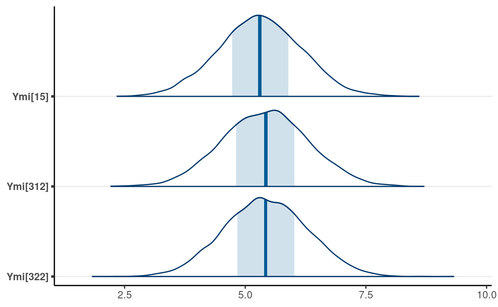

library(tidyverse)
library(here)
library(gridExtra) # for printing multiple ggplots
library(dagitty)
library(ggdag)
library(rstan)
rstan_options(auto_write = TRUE)
library(brms) # simplify fitting Stan GLM models
library(posterior) # for summarizing draws
library(bayesplot) # for plotting posterior draws
library(modelsummary) # table for brms
library(mice) # for multiple imputation
theme_set(theme_classic() +
theme(panel.grid.major.y = element_line(color = "grey92")))
Missing data are common in many research problems. Sometimes missing data arise from design, but more commonly, data are missing for reasons that are beyond researchers control.
The treatment of missing data depends on the underlying causal structure (likely everything else), so you need some causal diagrams. The following examples are based on the ones in McElreath (2020, chapter 15.2). Lets say we have a sample of students. I want to study the association between the number of hours each student studied per day (\(S\)) and the quality of the homework (\(H\)). We have the following DAG:
Lets say the actual data generating model is
\[H_i \sim N(\beta_0 + \beta_1 S_i, \sigma),\]
with \(\beta_0\) = 5, \(\beta_1\) = 1, \(\sigma\) = 0.7.
ggplot(full_data, aes(x = S, y = H)) +
geom_point() +
geom_smooth(method = "lm")
The statistical literature has generally distinguished three types of missing data mechanisms, with some confusing names: missing completely at random (MCAR), missing at random (MAR), and missing not at random (MNAR). Lets see each of them with the corresponding causal diagram.
Lets say all students have dogs, and somehow for some of the students, their dogs would eat their homework, producing missing data. Let \(D\) be an indicator for whether the dog ate the homework. To be consistent with the missing data literature, we set \(D\) = 0 to mean that the dog ate the homework, so that there is missing homework. When \(D\) = 1, the homework is turned in.
The impact of missing data is through two things. First, it reduces the sample size. Second, and more importantly, it can lead to a biased sample that gives non-representative estimates, compared to what you would get with the full data. Think about why polls may get election results wrong, even if they have a large sample: the sample in the pool has different characteristics from the actual voters.
The missing data mechanism that is relatively less harmful is missing completely at random (MCAR). It means that why the data are missingor why the dog ate the homeworkhappens completely on a random basis. Let H* be
We have the following DAG:
From the DAG, the association between S and H* is not confounded by D, so missing data wont bias the coefficient.
Lets simulate ~ 25% completely random missing data.
ggplot(mcar_data) +
geom_histogram(aes(x = H, fill = "full data"), alpha = 0.5) +
geom_histogram(aes(x = Hs, fill = "observed data"), alpha = 0.5) +
labs(fill = NULL)
ggplot(full_data, aes(x = S, y = H)) +
geom_point(aes(col = "full data"), alpha = 0.2) +
geom_point(data = mcar_data, aes(y = Hs, col = "observed data")) +
geom_smooth(data = mcar_data,
aes(y = Hs, col = "observed data"),
method = "lm", size = 2, fill = "lightblue") +
geom_smooth(aes(col = "full data"),
method = "lm", alpha = 0.5, linetype = "dashed",
fill = "lightpink") +
labs(col = NULL)
The regression line is pretty much the same as what you got with the full data; just that the uncertainty bound is a bit wider.
Now, lets consider the situation where dogs are more dissatisfied when the students spend more time studying, and less time with them, so they are more likely to eat the homework. The term missing at random is a very confusing terminology, but it means that observed data in the model can explain the missingness. So if we include \(S\) in the model, we account for the missing data mechanism. We can see the following DAG:
Another way to determine whether \(S\) is sufficient to account for the
missing data mechanism is to use the \(d\)-separation criteria, which you can find
in the dagitty package with the dseparated()
function. The goal is to find a variable set that makes \(D\) and \(H\) conditionally independent.
dseparated(dag3, "D", "H", Z = c("S")) # d-separated
#> [1] TRUELets simulate some data with the dogs eating homework for the most hardworking students (or those who study too much).
mar_data <- full_data %>%
mutate(D = as.numeric(S < quantile(S, probs = .75)),
Hs = if_else(D == 1, H, NA_real_))
As you can see, the distribution of \(H\) is now very different from that of \(H*\):
ggplot(mar_data) +
geom_histogram(aes(x = H, fill = "full data"), alpha = 0.5) +
geom_histogram(aes(x = Hs, fill = "observed data"), alpha = 0.5) +
labs(fill = NULL)
But it does not distort the association between \(S\) and \(H\).
ggplot(full_data, aes(x = S, y = H)) +
geom_point(alpha = 0.2) +
geom_point(aes(col = "full data"), alpha = 0.2) +
geom_point(data = mar_data, aes(y = Hs, col = "observed data")) +
geom_smooth(data = mar_data,
aes(y = Hs, col = "observed data"),
method = "lm", size = 2, fill = "lightblue") +
geom_smooth(aes(col = "full data"),
method = "lm", alpha = 0.5, linetype = "dashed",
fill = "lightpink") +
labs(col = NULL)
Now, lets imagine there is an additional variable, \(X\), representing the noise level at the students home. As you can guess, dogs are more likely to misbehave in noisier environments, and homework quality may suffer in a noisier environment. So we have
If we only include $ S$ to predict $ H*$ in our model, this mechanism is called missing not at random (MNAR). Here, even when we condition on \(S\), there is still an association between \(D\) and \(H\), due to the shared parent \(X\). We can see this in R:
dseparated(dag4, "D", "H", Z = c("S")) # not d-separated
#> [1] FALSESo the missing data will lead to biased results. Lets simulate some data.
ggplot(full_data2, aes(x = S, y = H)) +
geom_point(aes(col = "full data"), alpha = 0.2) +
geom_point(data = mnar_data1, aes(y = Hs, col = "observed data")) +
geom_smooth(data = mnar_data1,
aes(y = Hs, col = "observed data"),
method = "lm", size = 2, fill = "lightblue") +
geom_smooth(aes(col = "full data"),
method = "lm", alpha = 0.5, linetype = "dashed",
fill = "lightpink") +
labs(col = NULL)
As you can see, the red line gives a biased representation of the blue line.
In this case, if we have measured \(X\), including \(X\) also in our model would give the correct result. We can check for \(d\)-separation:
dseparated(dag4, "D", "H", Z = c("S", "X")) # d-separated
#> [1] TRUESo MNAR depends on whether our model fully accounts for the missing data mechanism. Here, it is MNAR if we do not include \(X\), but it will be MAR if we include \(X\). The following shows the results when conditioning on \(X\).
# Prediction with X added to the equation
full_data2 <- full_data2 %>%
mutate(Sres = residuals(lm(S ~ X, data = .)),
Hres = residuals(lm(H ~ X, data = .)))
mnar_data1 <- mnar_data1 %>%
drop_na() %>%
mutate(Sres = residuals(lm(S ~ X, data = .)),
Hres = residuals(lm(Hs ~ X, data = .)))
mnar_data1 <- cbind(
mnar_data1,
predict(lm(Hres ~ S, data = mnar_data1),
newdata = mnar_data1, interval = "confidence"
)
)
ggplot(full_data2, aes(x = Sres, y = Hres)) +
geom_point(aes(col = "full data"), alpha = 0.2) +
geom_point(data = mnar_data1, aes(y = Hres, col = "observed data")) +
geom_smooth(data = mnar_data1,
aes(col = "observed data"),
method = "lm", size = 2, fill = "lightblue") +
geom_smooth(aes(col = "full data"),
method = "lm", alpha = 0.5, linetype = "dashed",
fill = "lightpink") +
labs(col = NULL, x = "S (conditioned on X)", y = "H (conditioned on X)")
The more prototypical situation for MNAR, which is also the most problematic, is when missingness is directly related to the outcome variable, i.e., dogs like to eat bad homework.
mnar_data2 <- full_data %>%
mutate(D = as.numeric(H > quantile(H, probs = .25)),
Hs = if_else(D == 1, H, NA_real_))
ggplot(full_data, aes(x = S, y = H)) +
geom_point(alpha = 0.2) +
geom_point(aes(col = "full data"), alpha = 0.2) +
geom_point(data = mnar_data2, aes(y = Hs, col = "observed data")) +
geom_smooth(data = mnar_data2,
aes(y = Hs, col = "observed data"),
method = "lm", size = 2, fill = "lightblue") +
geom_smooth(aes(col = "full data"),
method = "lm", alpha = 0.5, linetype = "dashed",
fill = "lightpink") +
labs(col = NULL)
MNAR is sometimes called missing not at random or non-ignorable missingness, and as the name suggests, it refers to conditions where MAR does not hold. If you just look at the observed data, they may look very similar to the data with MAR.
Generally speaking, there are no statistical procedures distinguishing between MAR in general and MNAR.
The data come from the upcoming second edition of the book Applied Missing Data Analysis. It is from the National Institute of Mental Health Schizophrenia Collaborative Study on how treatment related to change in the severity of participants conditions over six weeks. This paper: https://psycnet.apa.org/record/1997-07778-004 contains more descriptions of the data.
zip_data <- here("data_files", "AMDA_Chapter5.zip")
if (!file.exists(zip_data)) {
download.file("https://dl.dropboxusercontent.com/s/w09k08it48407yz/AMDA%20Chapter%205%20%E2%80%93%20Bayesian%20Estimation%20with%20Missing%20Data.zip",
zip_data)
}
drug_data <- read.table(
unz(zip_data,
"AMDA Chapter 5 Bayesian Estimation with Missing Data/Example 5.8 Bayes Estimation with Auxiliary Variables/drugtrial.dat"),
col.names = c("id", "male", "drug", "severe0", "severe1",
"severe3", "severe6", "dropgrp", "edrop",
"ldrop", "dropout", "sdrop3", "sdrop6"),
na.strings = "999")
rmarkdown::paged_table(drug_data)
mice::md.pattern(drug_data, rotate.names = TRUE)
#> id male drug dropgrp edrop ldrop dropout sdrop3 severe0 severe1
#> 312 1 1 1 1 1 1 1 1 1 1
#> 53 1 1 1 1 1 1 1 1 1 1
#> 13 1 1 1 1 1 1 1 1 1 1
#> 45 1 1 1 1 1 1 1 1 1 1
#> 5 1 1 1 1 1 1 1 1 1 0
#> 1 1 1 1 1 1 1 1 1 1 0
#> 2 1 1 1 1 1 1 1 1 1 0
#> 3 1 1 1 1 1 1 1 1 1 0
#> 3 1 1 1 1 1 1 1 1 0 1
#> 0 0 0 0 0 0 0 0 3 11
#> sdrop6 severe3 severe6
#> 312 1 1 1 0
#> 53 1 1 0 1
#> 13 1 0 1 1
#> 45 0 0 0 3
#> 5 1 1 1 1
#> 1 1 1 0 2
#> 2 1 0 1 2
#> 3 0 0 0 4
#> 3 1 1 1 1
#> 48 63 102 227First, consider the missing data in severe0, which
consists of only three cases. In practice, this is likely not going to
affect the results much. However, for pedagogical purposes, well see
how Bayesian handle these.
Lets consider this plausible DAG with drug and
male predicting both severe0 and its
missingness (Ds0).
dag_drug1 <- dagitty(
'dag{ drug -> s0 -> "s0*" ; male -> s0 -> "s0*";
drug -> Ds0 -> "s0*"; male -> Ds0 -> "s0*" }'
)
latents(dag_drug1) <- c("s0")
coordinates(dag_drug1) <- list(
x = c(drug = 0, male = 0.3, s0 = 1, `s0*` = 1, Ds0 = 0),
y = c(drug = 0.7, male = 1, s0 = 1, `s0*` = 0, Ds0 = 0)
)
# Plot
ggdag(dag_drug1) + theme_dag()
From a Bayesian perspective, any unknown can be treated as a
parameter. This includes missing data. So we can treat the missing
values of severe0 as parameters, which I will call
y_mis.
Heres the Stan code
data {
int<lower=0> N_obs; // number of observations
int<lower=0> N_mis; // number of observations missing Y
int<lower=0> p; // number of predictors
vector[N_obs] y_obs; // outcome observed;
matrix[N_obs, p] x_obs; // predictor matrix (observed);
matrix[N_mis, p] x_mis; // predictor matrix (missing);
}
parameters {
real beta0; // regression intercept
vector[p] beta; // regression coefficients
real<lower=0> sigma; // SD of prediction error
vector[N_mis] y_mis; // outcome missing;
}
model {
// model
y_obs ~ normal_id_glm(x_obs, beta0, beta, sigma);
y_mis ~ normal_id_glm(x_mis, beta0, beta, sigma);
// prior
beta0 ~ normal(0, 5);
beta ~ normal(0, 2);
sigma ~ student_t(4, 0, 5);
}
generated quantities {
vector[N_obs] y_rep; // place holder
for (n in 1:N_obs)
y_rep[n] = normal_rng(beta0 + dot_product(beta, x_obs[n]), sigma);
}Notice that the data are separated into those with
severe0 observed, and those missing
severe0.
# Indicator for missing `severe0`
which_mis <- which(is.na(drug_data$severe0))
which_obs <- which(!is.na(drug_data$severe0))
m1_stan <- stan(
here::here("stan", "multiple_reg_mis.stan"),
data = list(
N_obs = length(which_obs),
N_mis = length(which_mis),
p = 2,
y_obs = drug_data$severe0[which_obs],
x_obs = drug_data[which_obs, c("drug", "male")],
x_mis = drug_data[which_mis, c("drug", "male")]
),
seed = 2222,
iter = 4000
)
Now, consider the posterior draws of y_mis
as_draws_df(m1_stan) %>%
subset_draws(variable = "y_mis") %>%
mcmc_areas()
brmsThe same can be done in brms with the mi()
syntax:
as_draws_df(m1_brm) %>%
subset_draws(variable = "Ymi") %>%
mcmc_areas()

The technique of multiple imputation is a Bayesian technique widely applied in statistics. The idea is to obtain multiple draws from the posterior distributions of the missing values. For example, we can randomly obtain five draws of the three missing values:
set.seed(937)
as_draws_df(m1_stan) %>%
subset_draws(variable = "y_mis",
draw = sample.int(8000, 5))
#> # A draws_df: 5 iterations, 1 chains, and 3 variables
#> y_mis[1] y_mis[2] y_mis[3]
#> 1 5.2 4.7 6.1
#> 2 5.9 5.9 4.2
#> 3 5.0 2.9 5.6
#> 4 4.9 5.1 5.4
#> 5 7.4 6.8 6.0
#> # ... hidden reserved variables {'.chain', '.iteration', '.draw'}There are many packages for multiple imputation with different
algorithms, including popular packages like mice and
mdmb. Generally speaking, these packages also used the same
Bayesian logic as discussed above, but employed some assumptions and
techniques that make computations faster for large data sets. One
possible workflow is to use these packages to perform multiple
imputations, perform Bayesian analyses in each imputed data set, and
then pool the results together. Below I provide an example of doing so
in mice and brms.
A word of caution is needed: the algorithms in mice and
related packages involve a lot of choices, and there is a full manual on
using mice that you should check out before you use the
package: https://stefvanbuuren.name/fimd/. While software makes
sensible defaults, in my experience, when the number of variables and
the proportion of missing data is large, setting up a reasonable
imputation model requires a lot of careful consideration, and still, you
may run into convergence issues. One thing you should make sure to do is
to check for convergence of the imputation, which is very similar to
checking MCMC convergence (as imputations are kind of like MCMC
draws).
Another drawback of these algorithms is that, by default, they do not take into account the causal mechanism of why data are missing. Therefore, they may introduce bias due to, for example, conditioning on a collider. So you should carefully specify which variables you want to include when imputing missing data.
# First, obtain the default settings
imp <- mice(drug_data, visit = "monotone", maxit = 0)
# These are the default imputation method (predictive mean matching)
imp$method
#> id male drug severe0 severe1 severe3 severe6 dropgrp
#> "" "" "" "pmm" "pmm" "pmm" "pmm" ""
#> edrop ldrop dropout sdrop3 sdrop6
#> "" "" "" "" ""# We should define which variables are used to impute which variables
(pred <- imp$predictorMatrix)
#> id male drug severe0 severe1 severe3 severe6 dropgrp edrop
#> id 0 1 1 1 1 1 1 1 1
#> male 1 0 1 1 1 1 1 1 1
#> drug 1 1 0 1 1 1 1 1 1
#> severe0 1 1 1 0 1 1 1 1 1
#> severe1 1 1 1 1 0 1 1 1 1
#> severe3 1 1 1 1 1 0 1 1 1
#> severe6 1 1 1 1 1 1 0 1 1
#> dropgrp 1 1 1 1 1 1 1 0 1
#> edrop 1 1 1 1 1 1 1 1 0
#> ldrop 1 1 1 1 1 1 1 1 1
#> dropout 1 1 1 1 1 1 1 1 1
#> sdrop3 1 1 1 1 1 1 1 1 1
#> sdrop6 0 0 0 0 0 0 0 0 0
#> ldrop dropout sdrop3 sdrop6
#> id 1 1 0 0
#> male 1 1 0 0
#> drug 1 1 0 0
#> severe0 1 1 0 0
#> severe1 1 1 0 0
#> severe3 1 1 0 0
#> severe6 1 1 0 0
#> dropgrp 1 1 0 0
#> edrop 1 1 0 0
#> ldrop 0 1 0 0
#> dropout 1 0 0 0
#> sdrop3 1 1 0 0
#> sdrop6 0 0 0 0# Set imputation predictors to empty (0) for the four variables
# `severe0` to `severe6`
pred[c("severe0", "severe1", "severe3", "severe6"), ] <- 0
# Use male, drug, dropout to predict missing data in severe1
pred["severe0", c("male", "drug", "dropout")] <- 1
pred["severe1", c("severe0", "male", "drug", "dropout")] <- 1
pred["severe3", c("severe0", "severe1", "male", "drug", "dropout")] <- 1
pred["severe6", c("severe0", "severe1", "severe3",
"male", "drug", "dropout")] <- 1
# Perform imputation
imp <- mice(drug_data,
m = 20, # 20 imputed data sets
predictorMatrix = pred, # which variables to impute which
# order of imputation
visit = c("severe0", "severe1", "severe3", "severe6"),
print = FALSE)
Convergence: Check the mixing of the chains.
plot(imp) # the chains should mix well
After the imputations, we can fit a Bayesian model to each
of the 20 imputed data sets. brms has a handy function
brm_multiple() for doing it. With 20 data sets, 2 chains
each, and 2,000 iterations (1,000 warm-ups) per chain, we should get a
total of 20 * 2 * 1000 = 40000 draws.
m2_imp <- brm_multiple(severe6 ~ drug + male + severe0,
data = imp, chains = 2, iter = 2000
)
Note that because we pool estimates from different data sets, the rhat statistic is unlikely to be under 1.01, unless the imputed data sets are very similar or the missing proportion is small. On the other hand, you dont want to see high rhat values within each imputed data set, which would indicate real convergence issues.
# Convergence with the first two chains (1st imputed data set)
as_draws_df(m2_imp) %>%
subset_draws(chain = 1:2) %>%
summarize_draws()
#> # A tibble: 7 10
#> variable mean median sd mad q5 q95 rhat
#> <chr> <dbl> <dbl> <dbl> <dbl> <dbl> <dbl> <dbl>
#> 1 b_Intercept 2.74 2.74 0.433 0.418 2.04 3.48 0.999
#> 2 b_drug -1.43 -1.43 0.152 0.152 -1.68 -1.18 1.00
#> 3 b_male 0.157 0.156 0.128 0.124 -0.0565 0.367 1.00
#> 4 b_severe0 0.285 0.284 0.0754 0.0741 0.159 0.407 1.00
#> 5 sigma 1.39 1.39 0.0489 0.0476 1.31 1.47 0.999
#> 6 lprior -3.35 -3.35 0.0136 0.0133 -3.37 -3.32 0.999
#> 7 lp__ -766. -766. 1.67 1.42 -770. -765. 1.00
#> # with 2 more variables: ess_bulk <dbl>, ess_tail <dbl># And do it for each imputed data set
m2_imp
#> Family: gaussian
#> Links: mu = identity; sigma = identity
#> Formula: severe6 ~ drug + male + severe0
#> Data: imp (Number of observations: 437)
#> Draws: 40 chains, each with iter = 2000; warmup = 1000; thin = 1;
#> total post-warmup draws = 40000
#>
#> Population-Level Effects:
#> Estimate Est.Error l-95% CI u-95% CI Rhat Bulk_ESS Tail_ESS
#> Intercept 2.71 0.46 1.81 3.63 1.06 418 2369
#> drug -1.45 0.18 -1.80 -1.10 1.15 170 604
#> male 0.22 0.15 -0.07 0.51 1.10 240 898
#> severe0 0.29 0.08 0.13 0.45 1.06 359 1962
#>
#> Family Specific Parameters:
#> Estimate Est.Error l-95% CI u-95% CI Rhat Bulk_ESS Tail_ESS
#> sigma 1.39 0.05 1.29 1.49 1.06 373 1331
#>
#> Draws were sampled using sampling(NUTS). For each parameter, Bulk_ESS
#> and Tail_ESS are effective sample size measures, and Rhat is the potential
#> scale reduction factor on split chains (at convergence, Rhat = 1).plot(m2_imp)
#> [1] "April 16, 2022"If you see mistakes or want to suggest changes, please create an issue on the source repository.
Text and figures are licensed under Creative Commons Attribution CC BY-NC-SA 4.0. Source code is available at https://github.com/marklhc/20221-psyc573-usc, unless otherwise noted. The figures that have been reused from other sources don't fall under this license and can be recognized by a note in their caption: "Figure from ...".